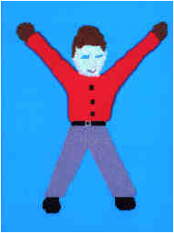
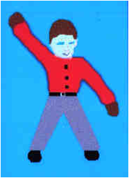
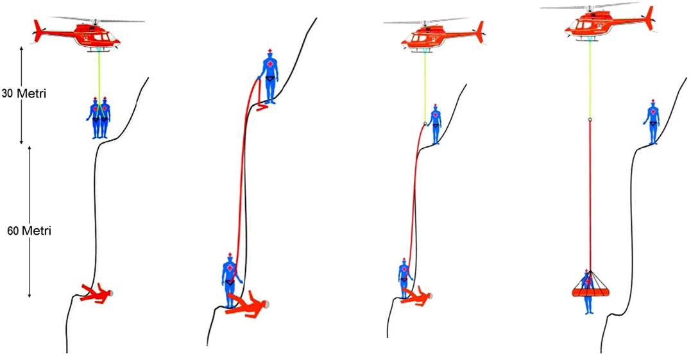

ASOCIATIA NATIONALA A SALVATORILOR MONTANI DIN ROMANIA
PROCEDURI ȘI TEHNICI DE BAZĂ ÎN SALVAREA MONTANĂ
Noţiuni de salvare cu ajutorul elicopterului
Distantele optime fata de obstacole la dirijarea elicopterului spre aterizare


Avem nevoie de ajutor



Nu avem nevoie de ajutor
Zonele de risc din jurul elicopterului

In jos
In sus
spre mine
inapoi

•Deplasaţi-vă înapoi!
Explicaţie: Braţele în lateral, cu palmele către înainte; braţele sunt balansate prin mişcare repetată spre înainte şi în sus până la înălţimea umerilor

Urcaţi!
Explicaţie: Braţele întinse orizontal, cu palmele rotite în sus, făcând semne către în sus. Viteza mişcării indică rata urcării.

Rămâneţi în!
Explicaţie: Braţele întinse orizontal în ambele părţi. zbor la punct fix

Explicaţie: Braţele întinse orizontal, cu palmele rotite în jos, făcând semne către în jos. Viteza mişcării indică rata coborârii.

Explicaţie:
Braţul drept ridicat de la nivelul cotului, cu degetul mare întins.

Deplasarea pe orizontală!
Explicaţie:
Braţul corespunzător întins orizontal în lateral în direcţia deplasării iar celălalt braţ mişcat, în aceeaşi direcţie în faţa corpului, mişcările fiind repetate


Aterizaţi!
Explicaţie:
Braţele încrucişate şi întinse în jos, în faţa corpului.
Tehnica de lucru „Coarda super lungă”
Marc Ledwidge-Parks Canada (a prezentat această tehnică la congresul CISA-IKAR 2006 SLOVENIA)
Se defineşte ca „Operaţiune dincolo de lungimea normală de lucru”. Lungimea normală a corzii de lucru se consideră a fi între 30–60 m, şi cel mai des lucrându-se cu lungimea de 30 m. Coarda de salvare creşte în dimensiune în fracţiuni de 15 m. Dacă o lungime de 60 m a corzii de lucru nu este de ajuns pentru a se accesa accidentatul/zona, următoarea tehnică se va lua în considerare. Această metodă implică extinderea lungimii corzii de lucru fără a menţine elicopterul în survol la punct fix.

Criteriile care determină folosirea acestei metode sunt:
- Spaţiu insuficient pentru rotorul elicopterului
- Pereţi verticali şi de mari dimensiuni
- Canioane adânci
-Accesul de la sol necesită prea mult timp în situaţiile de urgenţă
-Accesul de la sol implică riscuri prea mari
Elemente care trebuie luate în considerare şi necesită atenţie sporită
- Aprecierea distanţei verticale este dificilă
- Este nevoie de mai mulţi salvatori care trebuie coborâţi şi extraşi
- Probabilitate mare de balansare şi lovire a sarcinii aflată la capătul corzii/ cablului.
Este necesară o instruire (briefing) detaliată a intregii echipe înaintea inceperii acţiunii (pilot, mecanic, salvatori, etc). Tehnica este folosită pentru recuperarea/extragerea de la „distanţe/adâncimi” mari. Imaginile următoare ilustrează la modul general procedura.